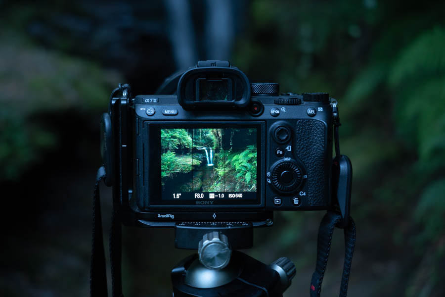

Según esta regla de composición fotográfica, si dividimos el encuadre vertical y horizontalmente en 3 secciones iguales, deberíamos colocar los elementos importantes de la imagen sobre las líneas o en las intersecciones de las líneas.
Usar la regla de los tercios es una forma muy simple y efectiva de encuadrar tu composición, y hoy en día la mayoría de las cámaras digitales incluyen cuadrículas de composición con la división de los tercios para componer imágenes.
